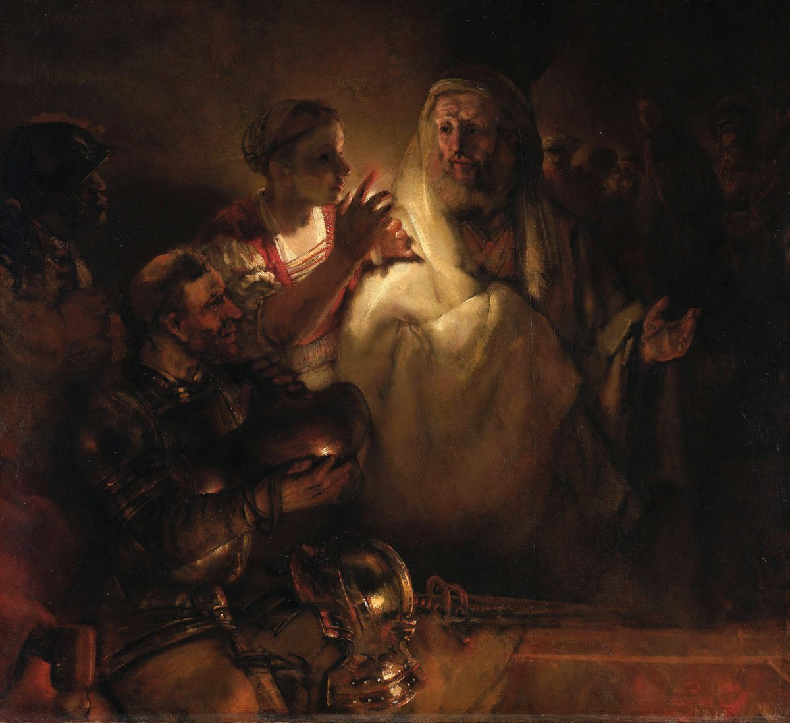

Matthew 26 — The Mister Translation

⚠ Rembrandt does to this scene what Matthew does, and then one thing Matthew does not. The Gospel runs two hearings at once in one house — Jesus under oath inside, Peter under oath in the courtyard — and uses the same word, aulē, for where each of them is standing (vv58, 69). Rembrandt collapses the two into a single room: the denial in the lit foreground, and in the dark at the right the bound figure being led away, turning his head. ⚠ The turn is the painter’s addition, not Matthew’s — it is Luke who writes that the Lord looked at Peter, and this library notes the borrowing rather than letting it pass as the text. What is exactly Matthew’s is the light: the accusation and the only lamp in the picture are in the same hand. She is holding the candle up to read his face, and three verses later it is not her eyes but his accent that convicts him.
{kind=link}
Translator’s Notes — verse by verse
Each note explains this translation's choice and compares the seven versions on the shelf. Quotations from copyrighted versions (NIV, TLB, NWT) are kept to short phrases for comparison; KJV, Geneva, Douay-Rheims and ASV are public domain.
The fifth and last time, and this one is worded differently. “And it happened, when Jesus had finished…” is Matthew’s structural joint, and chapter 7’s note promised it five times: at 7:28, 11:1, 13:53, 19:1 and here. It lands on schedule, and with one word the others do not have. The first four read “these words,” “these parables,” “instructing the twelve”; this one reads pantas tous logous toutous — ALL these words. ⚠ The formula is not closing the fifth discourse. It is closing the teaching, all of it, and what follows in this Gospel is narration until the very last paragraph. Nothing on the shelf marks the difference; ASV and KJV both have “all these sayings,” which is right, but the reader has no way to know the other four seams lacked the word. This translation bolds nothing here and says it in the note instead.
“Is handed over” — a present tense for something two days off. Paradidotai is present indicative passive, not future: the process is spoken of as already running. ⚠ And the verb is this chapter’s spine — it sounds in ten of these seventy-five verses (2, 15, 16, 21, 23, 24, 25, 45, 46, 48). Its plain sense is to hand over, a judicial word: what a magistrate does when he delivers a prisoner to the executioner. English “betray” is an interpretation of the act, and a fair one for what Judas does — but Matthew uses the same verb of what is being done to the Son of Man in the passive, with no agent named (v2, v24, v45), and no translation can make “betray” work in those. So this translation reads hand over throughout and lets the one word do what the Greek does. KJV “betrayed”; ASV uses “delivered up” in the passives, which is the same instinct.
The plan they state is the plan that fails. “Not during the festival” (v5) is the one decision the priests make in this chapter, and the rest of the chapter is Passover. Matthew does not comment. ⚠ A small variant: the critical text has “the chief priests and the elders”; the Byzantine tradition adds “and the scribes,” filling out the familiar triad. Nothing turns on it, and it is the ordinary direction of scribal drift — toward the fuller, more expected list.
Not oil — ointment. Myron is scented ointment, not the elaion that lit the lamps of the previous chapter, and barytimos is literally heavy in price. It came in an alabastron, a flask of alabaster with no handle and a neck made to be snapped off rather than opened, which is why the disciples can price it and why the act is irreversible. She is in “the house of Simon the leper” — a man still carrying, as a name, a disease he presumably no longer has.
⚠ “You always have the poor with you” — and what the sentence it comes from actually says. Jesus is quoting Deuteronomy 15:11, and the whole verse runs: “For the poor will never cease out of the land — therefore I command you: you shall surely open your hand to your poor and needy brother.” The permanence of poverty is the premise of a command to give, not a reason to stop. ⚠ This is worth saying plainly because the half-sentence has a long history of being quoted for the opposite purpose — as a shrug at need, or an argument against relieving it. The library names the history rather than pretending the misuse is unimaginable, and notes that in the same breath he calls what she did “a good work.” Deuteronomy 15 is not yet on these pages; when the library reaches it, the whole verse will be there to read.
She is the only person in the chapter who behaves as if he is going to die. Entaphiasai, “to prepare for burial” — and everyone else at that table has just heard him say it twice (v2, and again at 20:18-19). The disciples do arithmetic; she does the thing you do to a body.
⚠ And a promise the text does not keep in the way you would expect. “Wherever this good news is proclaimed… what she did will also be told, in memory of her” — and Matthew does not give her name. The sentence that guarantees she will be remembered leaves the reader nothing to remember her by. John names a Mary at a similar supper and Luke tells a different story with a different woman; harmonizing them is a choice, and this library’s practice is to report the Gospel in front of it. So the note records what Matthew does: an unnamed woman, an act he says will outlast the empire, and no name in the promise. NIV and TLB both add nothing; Geneva’s marginal note supplies “Mary” from John, which is exactly the harmonizing move.
“They weighed out” — and the verb is the point. Estēsan is from histēmi, to set or place, used of putting metal on a balance. Coined money existed; the priests weigh. ⚠ That is because the sentence is quoting Zechariah 11:12, where the Hebrew reads wayyishqelu et-sekhari, sheloshim kasef — “so they weighed out my hire, thirty of silver” — the same act, in the same order, with a weighing-verb in both languages. The prophet is being paid off and treats the sum as an insult; Matthew does not say so here, and the next chapter will do something further with the same passage.
⚠ What thirty pieces of silver was. Matthew gives a number and no valuation, and the Law supplies one: if an ox gores a servant, “he shall give to their master thirty shekels of silver” (Exodus 21:32, already on these pages). It is the statutory compensation for a dead servant. Whether Matthew intends that echo the text does not say — but the figure was not arbitrary in a world that read Exodus, and the library records the datum without building on it.
The price of a brother, twice. Genesis has Judah’s brothers sell Joseph for twenty pieces of silver, and that chapter’s note already flagged the later rhyme readers have long heard here — while insisting Genesis makes nothing of it. Neither does Matthew. Both facts are on the page and neither is an argument.
“A certain man.” Ton deina is Greek’s word for so-and-so — what’s-his-name, the person you decline to identify. Matthew uses it once in his Gospel and it is here, for the householder whose room becomes the upper room. The anonymity may be discretion inside a city where the man’s guest is about to be arrested; the text supplies the word and no reason.
“Surely not I?” — a question shaped to be told no. Mēti is the particle that expects a negative answer, and all eleven use it. English cannot do this with word order, so “Surely not I” carries it. KJV “Lord, is it I?” and ASV the same lose the tilt; NWT’s “It is not I, is it, Lord?” is clumsy English and the most accurate rendering on the shelf, which is the sort of trade that happens often with this version.
⚠ And now the detail this Gospel has been setting up for three chapters. The eleven say “Lord” (kyrie, v22). Judas says exactly the same sentence and calls him “Rabbi” (rhabbi, v25), and again in the garden, “Greetings, Rabbi” (v49). Those two verses are the only times in Matthew that anybody addresses Jesus as Rabbi — and the word’s only other appearances in this Gospel are at 23:7-8, where Jesus condemns loving the title and tells the disciples “do not be called Rabbi.” So the one man who uses it of him uses it twice, at the two moments of the handing over, three chapters after the title was forbidden. No version marks this, because no version can: KJV, ASV, NIV and NWT all print “Master” or “Rabbi” without comment, and the pattern is only visible if you count. This translation keeps Lord and Rabbi distinct and never renders either with the other.
“You said it.” Sy eipas — two words, and not a yes. It concedes the questioner’s own sentence without adopting it, the way a defendant might. ⚠ Keep it in mind: the same two words are the entire answer to the high priest at v64, and this translation renders them identically in both places so the reader can see that Judas and Caiaphas get the same reply.
The hardest sentence in the paragraph is not softened. “It would have been better for him if that man had not been born” (v24). Every version on the shelf reads it plainly, and so does this one. Matthew sets it immediately beside “the Son of Man goes as it is written about him” — the thing that must happen, and the woe on the man through whom it happens, in one breath and with no attempt to reconcile them. The library reports the juxtaposition and does not resolve it.
The four verbs, for the third and last time. Took — blessed — broke — gave. Chapter 14’s note flagged the sequence at the feeding of the five thousand and promised it here and at 15:36; both have now landed, word for word. Matthew is not varying his verbs, and the last supper is told in the vocabulary of a picnic on a hillside.
⚠ Two different words, and the received text levels them. Over the bread he eulogēsas — blessed; over the cup he eucharistēsas — gave thanks. The critical text keeps the two distinct; the Byzantine tradition reads eucharistēsas in both places. The variation is almost certainly original, for the ordinary reason that scribes smooth and rarely roughen — a copyist who found two words for one gesture had every motive to match them, and none to split them. So this translation prints having blessed and having given thanks. A small irony worth recording: the English word Eucharist comes from the second of these, the word said over the cup. KJV follows the Byzantine text and has “blessed… gave thanks” anyway, since the KJV translators rendered the two verbs distinctly at Mark.
⚠ “Covenant,” not “testament” — and the word that named half this Bible. Diathēkē in ordinary Greek can mean a will, the document by which a man disposes of his estate; and that is the sense the Latin testamentum caught, and through Latin the English word testament, and through that the titles Old Testament and New Testament. But in the Greek Old Testament diathēkē is the standing rendering of Hebrew berit — a covenant, a sworn bond between parties — and that is unmistakably the sense here, with blood, at a Passover meal, echoing Exodus 24:8 (already on these pages). So this translation reads covenant. KJV and Douay read “testament” (Douay because it is translating the Vulgate, which is exactly the Latin route described); ASV, NIV and NWT all read “covenant.” The shelf has effectively settled this one, and the two Testaments on every shelf in the world are named from the reading it abandoned.
⚠ The famous word that is not in the earliest text: NEW. The reading here is “this is my blood of the covenant”; Tregelles and the Byzantine tradition read “of the new covenant” (kainēs), which is where the KJV’s “my blood of the new testament” comes from. The shorter reading is followed here, and the reason is about motive rather than counting: Luke 22:20 and 1 Corinthians 11:25 both say “the new covenant” with no dispute at all, so a scribe copying Matthew had two familiar parallels pulling the word in — and the very next verse hands him the adjective, where Jesus says he will drink it kainon, new, in the kingdom. Additions of that kind are easy to explain; a scribe deleting “new” from a sentence about the new covenant is not.
⚠ “For MANY” — which the text says, and which is not “for all.” Peri pollōn. Chapter 20’s note on the ransom flagged this word and said the argument would return, and here it is at the table. The vocabulary is Isaiah’s — the servant who “bore the sin of many” (Isaiah 53:12) — and in Hebrew idiom “the many” can carry an inclusive weight that English “many” loses, which is the honest case for the broader rendering. But the Greek word is pollōn, and this translation prints it. ⚠ That this is a live question and not an antiquarian one: the English Roman Missal said “for all” from 1973 and was changed back to “for many” in the translation that came into use in 2011, on the ground that the liturgy should render what the text says and leave the theology to be taught. Every version on the shelf reads “many”; the dispute has been about what to say in church, which is a different question from what the Greek is, and the library keeps the two apart.
“When they had sung the hymn.” One participle, hymnēsantes. It was almost certainly the Hallel that closes a Passover meal, and Matthew does not say so — he says they sang and went out. This translation adds nothing to it.
⚠ The quotation moves the striking from a sword to God. “I will strike the shepherd, and the sheep of the flock will be scattered” is Zechariah 13:7 — and the Hebrew there does not say “I will strike.” It opens “Awake, O sword, against my shepherd,” and the command is addressed to the sword: hakh et-haro’eh, strike the shepherd, an imperative. Matthew’s Greek has pataxō, first person singular future — I will strike. So a summons to a weapon becomes God’s own act, stated in the first person, which is a considerable difference in a sentence about who is responsible for what is coming. ⚠ The library reports this as a fact about the evidence and does not adjudicate it: Matthew may be following a Greek text that already read this way, or making the shift himself to say that what happens tonight is not an accident of Roman and priestly politics. What is certain is that the Hebrew reads an imperative and the Gospel reads a first person, and no version on the shelf tells the reader so — KJV, ASV and NIV all print “I will smite” here and “smite the shepherd” at Zechariah, twenty pages apart, with nothing to connect them.
“Made to stumble.” Skandalisthēsesthe — the trap-trigger word this translation met at 18:6, where causing a little one to stumble earned the millstone. It is passive: they will be tripped, not merely offended. KJV “offended” is the 1611 sense of causing a stumble, not taking umbrage — a false friend the dictionary entry sets out.
⚠ And the verb Peter is given is the one he had already been handed. “You will deny me three times” is aparnēsē, and the compound aparneomai appears in Matthew in exactly two places: here (and its echo at v75), and at 16:24 — “if anyone wants to come after me, let him deny himself and take up his cross.” The same verb, and Peter was standing there for that one; it is the sentence he answered by being told he was thinking as men think. Denying yourself and denying him are one word apart in this Gospel, and Matthew never remarks on it.
The place is a machine. Gethsēmani transliterates Aramaic gat shemanē, oil press — the stone trough and weighted beam that crushed olives on the Mount of Olives, which is the hill they have just walked up. Matthew calls it a chōrion, a plot of ground, and gives the name without translating it, as he does with Golgotha two chapters on. The library notes what the word means and declines to preach the obvious.
⚠ The cup, and the chain is now complete. Three times in Matthew Jesus uses potērion of his own fate, and this is the third: he asked two ambitious brothers whether they could drink “the cup I am about to drink” (20:22), he handed a cup to the Twelve nine verses ago (v27), and now he asks for this one to pass. Chapter 20’s note said the word would return in Gethsemane and it has. In the prophets the cup is the portion assigned — usually of wrath — and the brothers said “we are able” without knowing what they were agreeing to. They are two of the three men asleep in this garden.
⚠ “Stay awake” — the payoff the last two chapters were built to make. Grēgoreite. 24:42 commanded it, and that chapter’s note said the word was waiting for the ten girls and then for Gethsemane; 25:13 commanded it again as the moral of the lamps. Here it is spoken three times in nine verses (vv38, 40, 41) to the three men closest to him, and they cannot do it once for an hour. ⚠ And there is a real tension with the parable, which this library will not smooth: at 25:5 all ten girls fell asleep and the story does not blame them for it — what divided them was oil, bought earlier. Here sleeping is the failure itself. The difference is that these three were asked, by name, twice, and the third time he stops asking. That is not a contradiction between the chapters; it is the parable’s point being tested on people rather than characters, and coming out worse.
“Testing,” and it is the prayer they had been taught. Peirasmos — the word of “lead us not into peirasmos” in the Lord’s Prayer, and chapter 6’s note planted it explicitly “waiting for Gethsemane.” The one Greek word covers an outward trial and an inward enticement, and the ambiguity is not resolvable here either. He tells them to pray the petition he taught them, in the hour it was for.
“The spirit is willing, but the flesh is weak.” There is no verb in the Greek — to men pneuma prothymon hē de sarx asthenēs, spirit eager, flesh weak, two nouns and two adjectives. It is said to sleeping men as an explanation, not an accusation, which is a different sentence from the one the phrase has become in English.
⚠ And one line the shelf genuinely splits on. Katheudete to loipon kai anapauesthe (v45) can be read as an imperative — “Sleep on now and take your rest” — or as a question, “Are you still sleeping and resting?”, or as a flat statement of fact. The Greek form is identical in the first two cases and the context supports either: bitter permission, or a last incredulous question with the torches already visible. KJV and ASV take the imperative (“Sleep on now”); NIV takes the question; NWT the imperative. This translation prints the imperative because it is the harder and more characteristic reading, and records that the question is fully available in the grammar. Two verses earlier he had said their eyes were heavy; the tone you hear in v45 is the one you brought.
The sign and the act are not the same word. Judas arranges “the one I kiss” — philēsō, the plain verb; then he katephilēsen him, the intensive compound: kissed him warmly, fervently, at length. Matthew changes the word between the plan and the deed and says nothing about it. ASV catches it with “kissed him much”; KJV flattens both to “kissed.”
⚠ “Friend” — and it is never a friendly word in this Gospel. Hetaire is not phile. It is the cool, distancing address a superior uses, and it occurs three times in the whole New Testament, all three in Matthew: to the labourer grumbling about his wage (20:13), to the man with no wedding garment (22:12), and here. Every one of the three is addressed to somebody who has just broken faith, by the person they broke it with, and in the first two the man is about to lose something. Chapter 22’s note said whoever is called hetaire in this Gospel is about to lose something; that was the third instance being promised, and this is it. This translation keeps Friend in all three places, matching KJV and ASV, because using a chillier English word here would make Matthew’s pattern invisible — the coldness is in the Greek word choice, not in the tone of the English, and the note is where that belongs.
⚠ The sentence stops in the middle, and the manuscripts disagree about what kind of sentence it is. Eph' ho parei — four syllables and no main verb: literally “upon which you are here.” Read as an ellipsis it is a command with the verb left off — “[do] that for which you are here”; read as a question it is “what have you come for?” And the Byzantine text reads hō where the critical text reads ho, which tilts it toward the question. Both are ancient, both are grammatical, and the choice changes the last thing he says to Judas from permission into an interrogation. KJV “wherefore art thou come?” (the question); ASV “do that for which thou art come” (the command); NIV and NWT the command. This translation prints the broken sentence as a broken sentence — “Friend, what you are here for.” — and lets the reader hear both, because that is what the Greek does.
The sword saying, and the tension chapter 10 refused to hide. “All who take up a sword will perish by a sword.” Chapter 10’s note set this verse against “I did not come to bring peace but a sword” (10:34) and said the library would state the tension rather than resolve it. Both halves are now on these pages, and the resolution most often offered — that 10:34 is metaphor and 26:52 is policy — is available but is not in either text. What the verses do have in common is that in both of them the sword belongs to somebody else.
“Twelve legions.” Legiōnas is a Latin word wearing Greek endings — the empire’s own unit of account, about six thousand men, so twelve of them is something near seventy thousand. He answers a man with one sword by naming the largest military number available in the language, and attributing it to angels. The number twelve is also the number of the men he chose, one of whom is standing in the crowd.
⚠ “As against a BANDIT” — and he has used the word before. Lēstēs is not a thief (kleptēs, someone who steals quietly) but a brigand, and in the first century routinely an insurgent — armed, political, the sort of man a cohort turns out for at night. The irony is exact and Matthew plants it himself: at 21:13, clearing the temple, Jesus told that crowd they had made the house “a den of lēstōn.” The people he called bandits in the temple come for him, with swords, as for a bandit. KJV “thief” loses this in both places; NIV “rebellion / robbers” and NWT “robber” get the class of person closer. Two chapters from now the same word will describe the men crucified beside him.
⚠ A variant that changes who the reader is told to distrust. The critical text reads: they sought false testimony “and did not find it, though many false witnesses came forward. Later two came forward and said…” The Byzantine text rearranges the clause and calls the final pair two false witnesses. On the shorter reading Matthew stops applying the label at precisely the moment the damaging evidence arrives — and the reader is left to notice for himself that what the two report is not invented. He had said something very like it: John’s Gospel has “destroy this sanctuary and in three days I will raise it up” almost word for word, and Matthew himself has him predict three days repeatedly. What the two do is shift a passive into an active boast — “I am able to destroy” — which is how false witness usually works, and which the received text’s extra label makes it unnecessary to notice. This translation follows the shorter reading and prints the note.
Sanctuary, not temple. The witnesses say naos, the shrine building itself, where v55 said hieron, the whole walled complex with its courts. This translation keeps the two English words apart — sanctuary and temple — as it has throughout the Gospel; KJV and NIV use “temple” for both and the distinction disappears.
“I put you under oath.” Exorkizō — to place someone under an oath, to adjure. He has been silent, and the high priest reaches for the one instrument that legally compels speech. ⚠ Note what follows from this: the answer at v64 is given under oath, and forty verses later Peter will deny under oath in the courtyard outside the same building (v72, v74). Matthew is running two scenes at once in one house, and both of them turn on a man swearing.
“You said it” — the same two words as to Judas. Sy eipas, exactly as at v25. It is not evasion and not quite assent: it puts the sentence back in the questioner’s mouth. Then he stops being careful. “But I tell you” introduces the only expansive thing he says in the whole trial.
⚠ And chapter 25 planted this exactly. “You will see the Son of Man seated at the right hand of the Power and coming on the clouds of heaven” welds Psalm 110:1 to Daniel 7:13. It is the same image with which he had described himself four chapters earlier — “when the Son of Man comes in his glory… he will sit on his throne of glory” (25:31) — and that chapter’s note said the throne of glory would be “answered by a man on trial before a different court in two chapters,” and that the Son of Man in his glory would next appear “under interrogation.” This is that verse. He describes the seat he will occupy while standing in the dock of the court that is about to condemn him, and Matthew lets the juxtaposition do the work.
“The Power.” Hē dynamis used absolutely, as a reverent substitute for the divine name — the same instinct as this Gospel’s standing “kingdom of the heavens.” He is answering a charge of blasphemy and is careful, in the answer, not to pronounce the Name. ASV “the Power”; NIV “the Mighty One” explains it; KJV “power” lowercase loses that it is a title.
⚠ The gesture the Law forbids this particular man. The high priest “tore his garments.” Leviticus 21:10 (already on these pages) says of the priest “that is highest among his brethren, upon whose head the anointing oil is poured… he shall not let the hair of his head go loose, nor rend his clothes.” The library states the fact and also states the qualification, because the qualification is real: later Jewish tradition distinguished the mourning-tear the Torah forbids from a judicial tear on hearing blasphemy, and discussed this very case. So this is not simply a high priest breaking the Law — it is a high priest performing the tear his office prohibits, in a form the tradition carved out for exactly this occasion. Both halves belong on the page.
Three verbs for what they did to his face. Eneptysan — spat into his face; ekolaphisan — struck with the fist; erapisan — slapped with the open hand, a different and more contemptuous blow. Behind it stands Isaiah 50:6 (not yet on these pages): “I gave my back to the smiters… I hid not my face from shame and spitting.” This translation keeps the three verbs distinct; TLB compresses them, and KJV’s “buffeted… smote him with the palms of their hands” is accurate and now unreadable.
“Prophesy for us, Messiah!” They use the title as the joke while the scene supplies the prophecy — he had said, three chapters back, that this generation would fill up the measure of what was done to the prophets (23:32). Matthew does not point it out.
⚠ The three denials are not three of the same thing — the Greek grades them. It is easy to read this as one failure repeated, and the vocabulary says otherwise. First he simply denied (ērnēsato, v70). Then he “denied with an oath” (meta horkou, v72) — the second time he swears. Then he “began to call down curses and to swear” (katathematizein kai omnyein, v74): a curse invoked on himself if he is lying. Denial, then perjury, then self-imprecation, in about four minutes. And the object moves with it: at v70 he denies knowing what she is talking about; at v72 and v74 he denies knowing the man. ⚠ In the whole scene Peter never once says the name. Every version on the shelf has the three steps in it — they are in the words — but read at speed they flatten into a single act, so this translation keeps “with an oath” and “call down curses” explicit and unsmoothed. KJV “began to curse and to swear” has been widely misread as bad language; the word is judicial, not profane.
He is identified three times by where he is from. “Jesus the Galilean” (v69), “Jesus the Nazarene” (v71), and then Peter’s own lalia — his accent, his manner of speech — which “makes you obvious” (v73). He can deny the man and cannot deny the vowels. It is the one detail in the chapter that could not have been invented by somebody who was not there or told by somebody who was, and the library notes that as a literary observation and not as proof of anything.
⚠ And the sentence chapter 10 said he would enact. “Whoever denies me before men, I will also deny before my Father” (10:33) — that chapter’s note said Peter would do exactly the second half of that sentence, three times, before a servant girl’s fire, and named this passage. He does. Matthew puts the two halves of the acknowledge/deny formula in two different men in one night: inside the house, under oath, Jesus acknowledges; outside in the same courtyard, under oath, Peter denies. The same word aulē is used of where each of them is standing (v58, v69).
“Wept bitterly” — and Matthew stops. Eklausen pikrōs. There is no forgiveness scene here, no restoration, no comment; the chapter ends on a man crying in the dark, and the Gospel will not return to him by name until after the resurrection. ⚠ This translation resists the temptation every English rendering feels to warm the last clause. The rooster crowed, he remembered, he went outside, he wept bitterly. That is the whole of it, and the paragraph before it was a man being spat on.
Patterns worth carrying forward
Where this translation keeps the words exact / distinct: "hand over" for paradidōmi in all ten of its appearances, because Matthew uses the same verb of what Judas does and of what is done to the Son of Man in the passive, and "betray" cannot carry both; "covenant" for diathēkē, not the Latin-descended "testament" that named both halves of the Bible; "for many" for peri pollōn, printed as the Greek stands; "having blessed" over the bread and "having given thanks" over the cup, kept distinct where the received text levels them; "Friend" for hetaire, matched to 20:13 and 22:12; "stay awake" for grēgoreite, matched to 24:42 and 25:13; "testing" for peirasmos, matched to the Lord's Prayer; "sanctuary" for naos against "temple" for hieron; "bandit" for lēstēs, matched to 21:13; "Lord" and "Rabbi" never rendered with each other; "You said it" identical at v25 and v64; and the three denials kept graded — plain, then "with an oath," then "call down curses."
Echoes paid. The fifth and last discourse seam (v1) — the formula chapter 7's note promised five times, arriving with the one word the other four lack, pantas, "ALL these words"; the four verbs of took-blessed-broke-gave (v26) — flagged at 14:19 and paid at 15:36, now complete; the cup (v39) — third and last of the chain 20:22 opened, with v27's literal cup in between; grēgoreite (vv38, 40, 41) — commanded at 24:42 and 25:13, failed three times here by the three men who heard it; peirasmos (v41) — the Lord's Prayer petition, which chapter 6's note said was waiting for Gethsemane; hetaire (v50) — the third and last of the three, as chapter 22's note promised; the sword saying (v52) — the other half of the tension chapter 10 stated and refused to resolve; the den of bandits (v55) — 21:13's accusation turned back on him as a description; the throne of glory (v64) — 25:31's image spoken from the dock, exactly as chapter 25's note said it would be; aparneomai (v34) — the verb of "let him deny himself," now the verb for what Peter does to him; the acknowledge/deny formula (vv69-75) — 10:33's second half, enacted where chapter 10's note said it would be; and thirty pieces of silver (v15) — Zechariah 11:12's weighing-verb, with the rhyme Genesis 37's note heard and declined to press.
Echoes planted. The scriptures of the prophets (v56), a claim the next chapter will make in a way that raises a real problem about which prophet; Judas, left alive at the end of this chapter with the silver still in his hands; the bandits (v55), a word waiting for the two men who will be crucified beside him; the disciples' flight (v56), against a promise made nine verses later than the boast that failed; and Peter, who is not named again in this Gospel until after the resurrection.
⚠ And seven places the library reports rather than decides. Kainēs at v28, absent from the earliest text, which is where "the new testament" in the KJV comes from — with the scribal motive set out rather than merely the count. Peri pollōn (v28) — "many" as the Greek stands, the inclusive Hebrew idiom recorded as the honest case for "all," and the 2011 liturgical change noted as a fact about the churches rather than about the text. Eph' ho parei (v50), a sentence with no main verb, which is a command on one reading and a question on another, with the manuscripts split on the pronoun that decides it. Katheudete (v45) — "Sleep on" or "Are you still sleeping?", identical in form, and the shelf divided. The false-witness label (v60), which the received text applies to the final two and the earliest text does not. The Zechariah citation (v31), where the Hebrew has an imperative addressed to a sword and the Gospel has God in the first person. And the high priest's torn garments (v65), which Leviticus forbids his office — together with the later tradition's carve-out for precisely this case, because leaving that out would make an honest difficulty look like a simple hypocrisy.
Next in this book: chapter 27 — Judas takes the silver back, and the priests buy a field with it; a quotation Matthew assigns to Jeremiah that is not in Jeremiah, which the library will lay out without patching; Pilate washing his hands and a crowd choosing a man whose own name means "son of the father"; the flogging, the purple robe, the reed and the thorns; two bandits, one on each side; darkness at midday and a cry in Aramaic that Matthew stops to translate; and a torn curtain, a centurion, and the women who stayed to watch where they put him.